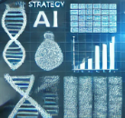

Maximizing Efficiency in Your Lab
Discover actionable strategies to streamline your lab workflows and boost productivity.
Labs are complex environments with numerous workflows and processes. This article explores key strategies
for enhancing efficiency in your lab, including streamlined workflows, better resource allocation, and adopting new technologies.

AI in Research Management
Learn how AI tools can revolutionize experiment tracking and data analysis.
AI is transforming research management by automating data analysis, improving experiment tracking, and providing
predictive insights to accelerate discoveries. Learn how to integrate AI tools into your lab.
Best Practices for Collaboration
Enhance team collaboration with actionable tips and the latest tools.
Collaboration is key to research success. This article provides tips on improving communication, assigning roles effectively,
and leveraging digital tools for seamless teamwork.